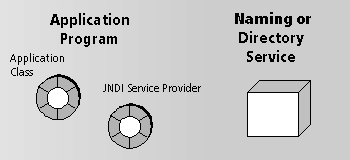

JNDI Concepts
JNDI technology enables Java programs to gain access to a wide variety of naming
and directory services in a consistent, Java-centric way. The following
picture shows a Java application using JNDI to access a directory service.

The role that each part plays is summarized below:
- Application class.
A class that calls the methods of a JNDI service provider to connect
to naming and directory services and perform operations such as querying
the service or binding new entries.
- JNDI Service Provider.
A Java class that can communicate with a naming
or directory service. JDK 1.3 includes service providers for the following:
- Network Information Service (NISCtxFactory)
- Cos Naming Services (CNCtxFactory)
- LDAP directory services (LdapCtxFactory)
- File system (RefFSCtxFactory)
- RMI Registry (RegistryContextFactory)
- Naming and Directory Service.
Software that manages name to object bindings.
A comprehensive account of JNDI is outside the scope of this document.
If you are developing programs that use JNDI and you are not familiar with
the technology, you will do well to look at any of the books that have
been written on JNDI.
Legal Notices